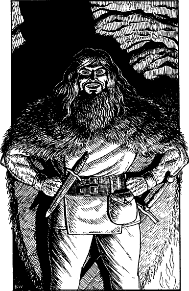

51
A laugh, deep and guttural, rumbles from the far side of the cavern. ‘I see Skalir’s play-actin’ ain’t good enough to fool you, Pathfinder,’ says a man who, until now, has been watching silently in the shadows. As he steps forward, the fire casts a warm glow over his massive frame. He stands over six-and-a-half-feet tall, his face is covered by a thick red beard, and he has a shock of bright red hair that cascades over the wolfskin cloak slung over his shoulders. He smiles, his green eyes bright and piercing, set wide beneath an intelligent brow.

‘Check on the sentries, Skalir,’ he instructs his lieutenant. ‘And make sure they’ve got their wits about ’em tonight.’ Obediently, the mouse-like man and his four companions leave the chamber. As the curtain is pulled across the archway, the red-haired giant motions you to sit with him at the fire. ‘I am Jarel,’ he says. ‘What do you want from me?’